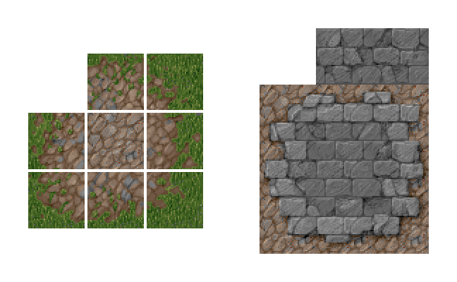
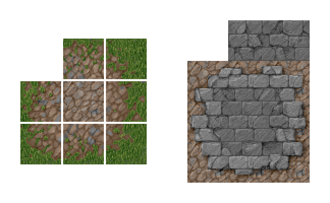
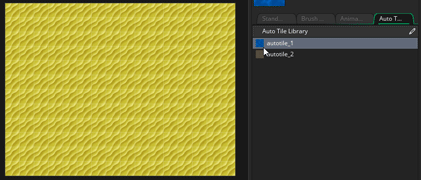

Ein Kachelsatz ist eine grafische Ressource zum Zeichnen von Ebenen und anderen statischen Komponenten Ihres Spiels. Ein Kachelset besteht aus einem einzelnen Bild, das dann in verschiedene "Zellen" (Kacheln) aufgeteilt wird, und jede Kachel kann in den Raumeditor platziert werden, um ein vollständiges Bild zu erstellen. Unten sehen Sie zwei Beispiel-Sprites, die als Kachelsätze verwendet werden können: 
Ein Kachelsatz ist eine grafische Ressource zum Zeichnen von Ebenen und anderen statischen Komponenten Ihres Spiels. Ein Kachelset besteht aus einem einzelnen Bild, das dann in verschiedene "Zellen" (Kacheln) aufgeteilt wird, und jede Kachel kann in den Raumeditor platziert werden, um ein vollständiges Bild zu erstellen. Unten sehen Sie zwei Beispiel-Sprites, die als Kachelsätze verwendet werden können: 
Dies sind die gebräuchlichsten Methoden, mit denen Menschen Kachelsets erstellen - entweder zusammengestaut oder mit kleinen Lücken, die sie voneinander trennen, und GameMaker Studio 2 kann beide Arten handhaben. Im Wesentlichen müssen alle Tilesets aus Bildern bestehen, die in ein klar definiertes Raster passen, wobei jede Zelle des Rasters die exakt gleiche Größe hat (obwohl die oben gezeigten Bilder alle aus quadratischen Kacheln bestehen, kann aus ihnen ein Kachelsatz hergestellt werden rechteckige Fliesen zu). Beachten Sie beim Erstellen Ihrer Tilesets, dass die oberste linke Gitterzelle immer leer sein muss, da dies die Kachel ist, die GameMaker Studio 2 für "leere" Kacheln in einem Raum und zum Löschen vorhandener Kacheln verwendet (und auch wenn Sie Pixel haben) Dieser Teil des Bildes wird ignoriert.
Wenn Sie zum ersten Mal eine Kachel-Set-Ressource erstellen, öffnet sich das Kachel-Set-Editor-Fenster mit den folgenden Optionen:
Hier können Sie Ihrem Fliesenset einen Namen geben. Namen können nur alphanumerisch sein und dürfen nur das Unterstrichsymbol "_" verwenden und sie dürfen nicht mit einer Zahl beginnen.
Hier können Sie die Sprite-Ressource auswählen, aus der unser Kachelset erstellt werden soll. Wenn Sie auf die Hauptschaltfläche klicken, wird der Asset Explorer geöffnet, in dem Sie das Sprite auswählen können, das Sie für die Kachel verwenden möchten:
Sie können auch auf die Schaltfläche Neuer Sprite klicken
Schaltfläche zum Erstellen einer neuen Sprite-Ressource (die den Sprite-Editor für die neue Ressource im Arbeitsbereich zum Bearbeiten öffnet) oder Sie können das aktuell ausgewählte Sprite mit der Schaltfläche Sprite bearbeiten bearbeiten
oder Sie können das Sprite - Bild selbst im Bild - Editor bearbeiten, indem Sie die Taste drücken
Taste.
Wenn Sie eine Kachel öffnen, wird standardmäßig auch das Fenster Eigenschaften Kacheln angezeigt (siehe unten). Wenn Sie es jedoch schließen, können Sie auf die Schaltfläche hier klicken, um es erneut zu öffnen.
Das Fenster Eigenschaften des Kachelsatzes dient zum Festlegen der Größe der Grundkachel (Standard ist 16px Quadrat), des Versatzbetrags und des Abstandes zwischen den Kacheln (diese beiden letzten Optionen sind für Sprites wie oben gezeigt, bei denen Lücken zwischen den einzelnen Teilen vorhanden sind) der Fliesen). Sie können auch die Ausgabegrenzwerte für das Kachel-Set-Image festlegen, das steuert, wie das Bild auf der Festplatte gespeichert wird, und nach Bedarf zusätzliche Pixel um jede Kachel hinzufügen.
Aufgrund der Art und Weise wie Fliesen gerendert werden, müssen sie vorher mit einem Rand um jeden herum vorbereitet werden, um die Kanten zu "schmieren". Das unten abgebildete Bild zeigt, wie Kacheln in der Regel von den Grafiktreibern des Geräts abgebildet werden, wobei die rote Linie um die Kachel herum zeigt, wo die U- und V-Koordinaten abgebildet werden (Die Buchstaben "U" und "V" werden zur Beschreibung der 2D-Textur verwendet) Gitter, weil "X", "Y" und "Z" bereits zur Beschreibung von Raum- und Objektkoordinaten verwendet werden:
Wie Sie sehen können, wählt es die Mitte des Texels aus (ein Texel ist nur ein Pixel in einer Textur-Map), um direkt zu zeichnen, wenn das Bild im Raum gezeichnet wird. Jetzt, im Maßstab 1: 1, ist das alles gut und schön, aber was passiert, wenn wir diese Fliese verkleinern? Das Problem mit der Verkleinerung ist, dass die UVs bei der Verkleinerung ebenfalls verkleinert werden und versuchen, in einen komprimierteren Bereich zu passen, aber das kann natürlich nicht passieren. Daher wählt der Grafiktreiber basierend auf den verfügbaren Pixelzentren aus, welche Texel gezeichnet werden sollen. Wenn wir uns also "nur" in ein neues Bildschirmpixel bewegen, weil die Grafiktreiber die Mitte des Pixels verwenden, um zu entscheiden, was gezeichnet werden soll, wählt es ein Texel, das die Kachel umgibt, und kein Texel auf der Kachel selbst.
Oben ist eine Kachel dargestellt, die auf 6 Bildschirmpixel herunterskaliert wurde. Dies zeigt, dass der Grafiktreiber, wenn er sich ein wenig in den nächsten Bildschirmpixel überlistet, entweder das Texel fallen lässt oder es versucht, ihn zu füllen Was es denkt, ist ein gültiges Texel. Sagen wir einfach, dass es in diesem Fall beschließt, das überlappte Texel in den Bildschirmpixel zu zeichnen, und da es jetzt deutlich außerhalb unserer Kachel liegt, erhält es dieses Pixel entweder von der nächsten Kachel oder von den kleinen Raumkapseln, was bedeutet, dass, wenn es schrumpft, Sie Risse zwischen Kacheln "Glitches" in, wie sie gezeichnet werden, und das ist, wo eine Menge Verwirrung entsteht... Jeder Grafiktreiber und Gerät tatsächlich tut dies auf seine Weise, was bedeutet, dass die Ergebnisse kann unberechenbar sein und schrecklich aussehen... aber wenn du vorsichtig bist und vorausplanst, kannst du es umgehen.
Bei High-End-Spielen, wenn Sie von einer einzelnen Textur (nicht auf einer Textur-Seite oder einem Textur-Atlas) zeichnen, haben Sie die Möglichkeit, einen Textur-Modus namens clamp zu verwenden und die letzte Texel-Reihe unendlich in die Entfernung zu wiederholen. Damit können Sie problemlos skalieren, da die Hardware gezwungen ist, die letzte Pixelzeile zu erhalten, egal was passiert. Dies ist, was die Einstellungen für den Ausgabebereich hier für Sie tun:
Oben ist ein "fixes" Kachel-Sprite abgebildet, und Sie sehen, dass es jetzt einen wiederholten Abschnitt um jedes Kärtchen gibt, was bedeutet, dass beim Überschreiten der Hardware immer das letzte Texel von der Kachel und nicht eines der Leerzeichen oder der Kachel danach ausgewählt wird. Also, wenn eine Kachel - Set erstellen, denken Sie daran, dass, wenn Sie in oder aus dem Spiel Sicht werden werden ein- oder werden die Kacheln skaliert werden Rendering, können Sie eine höhere Output Border Breite oder Höhe als der Standard haben müssen Wert von 2.
Die letzte Option in den Eigenschaften der Kachelgruppe ist Quelle Sprite-Export deaktivieren. Dies ist standardmäßig aktiviert, und die Funktion zeigt an, dass die Quell-Sprite-Ressource ausgelassen wird, wenn die Textur-Seite für Ihr Projekt generiert wird. Dies funktioniert unter der Annahme, dass ein Sprite, der als Kachelset verwendet wird, für nichts anderes verwendet wird und daher nur einmal exportiert werden muss. Wenn Sie die Basis-Sprite-Ressource für etwas anderes als Kacheln verwenden, sollten Sie dies jedoch deaktivieren, damit das Basis-Sprite und der Kachelsatz bei der Kompilierung beide zur Textseite hinzugefügt werden.
Jede der Schaltflächen im Abschnitt " Editoren " öffnet einen anderen Editor für die spezifische Funktionalität der Kachelsätze. Sie können Kachel-Set-Pinsel basierend auf mehreren Kacheln zusammen, animierte Kacheln und verschiedene Kacheln als einzelne Frames erstellen. Sie können auch Auto-Kacheln erstellen, die basierend auf den Kacheln, die sie umgeben, "zusammengefügt" werden. Jeder dieser Editoren wird im Folgenden näher erläutert.
Mit diesen Werkzeugen können Sie eine Vorschau des Sprites anzeigen, das für die Kachelgruppe ausgewählt wurde. Sie können sie zum Vergrößern und Verkleinern verwenden (zusammen mit
/
+ das Mausrad
) oder benutze die
um es wieder 1: 1 zu machen. Sie können auch auf die Schaltfläche Fensteranpassung klicken
um den gesamten Raumbereich in den aktuellen Arbeitsbereich des Editors einzupassen (dies wird je nach Bedarf vergrößert und verkleinert).
Eine weitere Funktion ist, dass Sie die Rasteransicht ein- oder ausschalten können, indem Sie auf klicken
und legen Sie die Farbe für das zu verwendende Raster fest (klicken Sie auf
Taste). Wenn das Raster aktiviert ist, wird für jede Kachel im Raster eine farbige Umrandung angezeigt, wobei die Trennungseinstellungen usw. berücksichtigt werden. Sie können die Farbe und das Alpha des Rasters bearbeiten, indem Sie auf den Pfeil neben dem Raster-Symbol klicken.
Dieser Abschnitt ist das Vorschaufenster der Kachelgruppe. Sie können die mittlere Maustaste verwenden


Tile-Set-Editoren
Nachdem Sie die grundlegenden Eigenschaften für Ihre Kachelgruppe im Haupt-Editor eingerichtet haben, können Sie einen von drei anderen Editoren öffnen, um weitere Kachelsatzinformationen hinzuzufügen. Jeder Editor entspricht einer anderen Funktionalität, aber alle basieren auf dem aktuellen Bild, das für die Kachel ausgewählt wurde. Sie können also ein einzelnes großes Kacheln-Set haben und darin Ihre Auto-Kacheln und animierten Kacheln usw. einbinden. Die folgenden Abschnitte erklären jeden der Editoren im Detail:
Wenn Sie im Raumeditor Kacheln auf eine Kachelkartenebene "malen", wählen Sie standardmäßig eine einzelne Kachel aus und malen damit. Allerdings sind Tilesets fast immer so entworfen, dass sie Abschnitte haben, die auf verschiedene Arten zusammenpassen, um ganze Abschnitte zu bilden. Zum Beispiel kann ein RPG-Kachelsatz Landschaftskacheln enthalten, die abhängig von der Anzahl der verwendeten Kacheln verbunden werden können, um größere oder kleinere Features zu erstellen. Wenn Sie nun mehrere Funktionen wie diese auf einer Raumebene platzieren möchten, müssen Sie mehrmals hin- und hergehen, um die Kachel zu ändern, was für Ihren Arbeitsablauf nicht gut ist. Um dies zu beheben, haben wir dem Kachelset-Editor Kachel- Pinsel hinzugefügt, die verfügbar sind, wenn Sie auf klicken
auf der Schaltfläche Pinsel Builder:
Im Pinsel-Generator haben Sie die ursprüngliche Kachel auf der linken Seite und eine leere "Leinwand" auf der rechten Seite. Sie können jetzt eine beliebige Kachel von links auswählen und auf der rechten Seite malen, um benutzerdefinierte "Pinsel" zu erstellen, die Sie dann im Raumeditor verwenden können. Beachten Sie, dass Sie mit der linken Maustaste klicken und halten können
+
Auf der rechten Seite können Sie drei Funktionen sehen, die wir gemacht haben (im Bild orange hervorgehoben). Beachten Sie, dass wir zwischen den einzelnen Elementen eine Lücke von einer Kachel hinterlassen haben. Dies liegt daran, dass jede berührende Gruppe von Kacheln im Raumeditor als einzelner Pinsel behandelt wird. Daher bleibt eine Lücke von einer Kachel, um anzuzeigen, dass es sich bei jeder Gruppe um eine handelt verschiedene Pinsel wollen wir erstellen. Während Sie Ihre Pinsel erstellen, malen Sie mit der linken Maustaste
. Sie können auch das Kachelblatt oder den Malbereich des Pinsels vergrößern
oder die mittlere Maustaste
Oben rechts sehen Sie das aktuell ausgewählte Werkzeug und Sie können auch die Größe des Pinsels festlegen, mit dem Sie malen möchten. Die Standardgröße ist 1, also eine einzelne Kachel, aber wenn Sie sie auf höhere Werte setzen, können Sie mit einem größeren Pinsel, der aus der ausgewählten Kachel besteht, malen (und löschen), wie im Bild unten gezeigt:
In der Toolbox können Sie das Tool auswählen, das für viele verschiedene Aufgaben im Kachelset-Editor verwendet werden soll. Einige davon hängen davon ab, ob in Ihrer Autotil-Bibliothek etwas definiert ist. Im Folgenden finden Sie eine kurze Übersicht über die einzelnen Werkzeuge (beachten Sie, dass diese Toolbox am oberen Rand des Raumarbeitsbereichs angezeigt wird, wenn Sie im Raum-Editor eine Kachelebene ausgewählt haben):
Dies ist das Stiftwerkzeug. Er verwendet die ausgewählte Kachel, um im Raum-Editor mit der linken Maustaste zu malen Mit dem Radiergummi können Sie die linke Maustaste benutzen Dies ist das Auswahlwerkzeug, mit dem ein Bereich der Kachelebene für die Bearbeitung definiert werden kann. Sie können die linke Maustaste klicken . Wenn Sie einen Bereich einer Kachelebene ausgewählt haben, funktionieren die restlichen Werkzeuge (Stift, Spiegeln, Drehen usw.) nur innerhalb des ausgewählten Bereichs. Beachten Sie, dass Sie auch kopieren können (
Wenn Sie auf dieses Werkzeug klicken, wird der Malstil " Automatisch" aktiviert. Wenn dies aktiv ist, können Sie eine beliebige Kachel aus der Autotile-Bibliothek auswählen und sie dann in die Raumebene einzeichnen. In GameMaker Studio 2 wird sie automatisch so geändert, dass sie den umgebenden Kacheln entspricht, solange Sie die Auto-Kachel-Registerkarte korrekt eingerichtet haben. Klicken Sie mit der linken Maustaste auf das Umkehren-Werkzeug Klicken Sie mit der linken Maustaste auf das Werkzeug Spiegeln Klicken Sie mit der linken Maustaste auf das Drehen-Werkzeug Unterhalb der Werkzeuge finden Sie zwei verschiedene Abschnitte zum Auswählen von Autotil- oder animierten Kacheln, die mit dem aktuellen Kachelsatzbild erstellt wurden. Ein einzelnes Sprite, das für einen Kachelsatz verwendet wird, kann viele, viele Einzelbilder enthalten. Diese können im Animations- oder Autotil-Editor kombiniert werden, um benutzerdefinierte Pinsel zu erstellen, die in diesen Abschnitten angezeigt werden und zusammen verwendet werden können mit regulären statischen Kacheln zum Erstellen von Pinseln (beachten Sie, dass eine animierte Kachel animiert wird, unabhängig davon, ob Sie sie aus der Bibliothek oder aus der Basiskachel ausgewählt haben).
Nachdem Sie alle benötigten Pinsel eingerichtet haben, können Sie diese verwenden, um Kacheln auf eine beliebige Kachelkartenebene innerhalb des Raumeditors zu malen.
Tiles werden im Allgemeinen als statische Zellen im Spielraum betrachtet. Mit GameMaker Studio 2 es jedoch möglich, sie wie ein Sprite zu animieren. Warum nicht einfach Sprites benutzen, fragst du? Nun, Sprites haben einen gewissen Verarbeitungsaufwand, weil sie mit einem Begrenzungsrahmen und der Art und Weise, wie sie gerendert werden, verknüpft sind, aber Kacheln haben einen viel geringeren Verarbeitungsaufwand und können daher schneller gerendert werden. Dies ist jedoch mit einem Preis verbunden, da bei Animationen mit Kacheln nur Animationen mit einer Zweierpotenz von 2, 4, 8, 16, usw. möglich sind offensichtlich innerhalb des Kachelrasters erstellt werden, und sie müssen alle mit der gleichen Geschwindigkeit animieren (auf einer pro-Baustein-Basis). Aber selbst mit diesen Einschränkungen sind animierte Kacheln eine leistungsstarke Funktion, die verwendet werden kann, um ansonsten statischen Umgebungen und Hintergründen Leben und Farbe hinzuzufügen.
Um eine Kachelanimation zu erstellen, müssen Sie zunächst einen Kachelsatz mit den erforderlichen Kacheln innerhalb des Sprite-Bildes haben (jedoch nicht als Sprite-Frames, also einen einzelnen großen Sprite-Frame mit allen darin enthaltenen Animationsbildern) und dann in der Kachel setze editor Du klickst auf die Kachel Animation Schaltfläche, um den Animationseditor aufzurufen:
Das obige Beispielbild ist ein einzelnes Bild mit allen darin enthaltenen Animationsframes, aber es sollte beachtet werden, dass das Bild auch andere Nicht-Animationskacheln enthalten könnte, da Sie einen einzelnen massiven Kachelsatz verwenden können und dann den "Kirschbaum" auswählen können Teile davon, aus denen Sie die Animation erstellen möchten. Zum Beispiel könnten Sie eine große Landschaftsfliese mit Bäumen, Erde und Wasser haben und innerhalb des Fliesensatzes mehrere Kacheln haben, die animiert werden sollen, um das Wasser zum Wellen zu bringen.
Um eine Kachelanimation zu erstellen, müssen Sie zunächst der Animationsbibliothek eine Animation hinzufügen, indem Sie auf die Schaltfläche Animation hinzufügen klicken
, die der Bibliothek einen leeren Animationsstreifen hinzufügt und Sie auffordert, eine Anzahl von Frames auszuwählen, die verwendet werden sollen:
Sie erhalten dann eine Ansicht jedes leeren Animationsrahmens, wobei der ursprüngliche Rahmen für Sie markiert ist:
Wenn Sie dann zu dem Kachel-Set-Bild auf der linken Seite des Editors zurückkehren, können Sie auf eine Kachel klicken, um sie in die Animation einzufügen, und der Frame wird zum nächsten weitergehen. Wenn Sie auf aufeinanderfolgende Kacheln klicken, wird die Animation gefüllt, und Sie können eine Vorschau anzeigen, indem Sie auf die Schaltfläche "Wiedergabe" neben den Bildern klicken:
Sobald Sie dies getan haben, wird Ihre Animation Teil der Animationsbibliothek und wenn Sie den Raumeditor betreten, können Sie ihn auswählen und im Raum platzieren. Beachten Sie, wenn Sie eine der Kacheln aus einer Animation auswählen, die in einem Raum zu platzieren, dass Fliese von der Fliese weiter beleben wird, so können Sie „desynchronisiert“ eine Animation, indem separaten Rahmen im Raum und sie werden alle animieren. Der einzige Nachteil hierbei ist, dass die Animationsgeschwindigkeit immer gleich ist, da sie für den gesamten Satz definiert ist und nicht für einzelne Animationen innerhalb der Bibliothek.
Ein paar Dinge, die du über Kacheln beachten solltest, die in Animationen verwendet werden:
- Wenn für die Kachel eine eigene Animation festgelegt wurde (also eine Animation, in der sie als erste Kachel festgelegt ist), wird diese Animation verwendet.
- Wenn die Kachel keine eigene Animation hat, sondern nur in einer anderen Animation verwendet wird, wird diese Animation an der ersten Position verwendet, an der die Kachel in der Animation vorhanden ist.
- Wenn die Kachel keine eigene Animation hat und in mehreren anderen Animationen verwendet wird, wird sie überhaupt nicht animiert. Sie müssen eine Animation explizit als erste Kachel angeben.
Die Auto Tile- Funktion ist ein unglaublich leistungsstarkes Tool, mit dem das Erstellen von Ebenen erheblich vereinfacht werden kann, unabhängig davon, ob es sich um ein Top-Down- oder Side-On-View-Projekt handelt. Im Wesentlichen erstellen Sie eine Autotil-Bibliothek und jedes Mal, wenn Sie eine Kachel von dieser Bibliothek ablegen, wird sie mit den umgebenden Kacheln "verbunden", um eine nahtlose Wand oder Plattform zu erstellen.
Bevor Sie jedoch mit der Autotil-Funktion beginnen, ist es sehr wichtig, dass Sie das Sprite-Set-Sprite korrekt eingerichtet haben und dass Sie einen geeigneten Typ von Autotil auswählen. Die verfügbaren Typen sind 47 Kachel-Autotiles oder 16 Kachel-Autotiles, wobei (im Allgemeinen) 16 Kacheln für Top-Down verwendet werden (da sie schönere Übergänge ergeben) und 47 für Platformer- / Side-Views verwendet werden, aber das ist absolut nicht der Fall bedeutet eine harte und schnelle Regel und hängt davon ab, wie Ihr endgültiges Projekt aussehen soll.
Das Bild unten zeigt eine typische 47-Fliesen- und 16-Fliesen-Fliesen für das Auto-Looten:
Wenn Sie sich nur die Bilder ansehen, wissen Sie nicht genau, wie sie zusammenpassen. Daher öffnen wir den Autotile-Editor aus dem Kachelset-Editor und fügen sie hinzu. Der Autotile-Editor sieht folgendermaßen aus:
Beachten Sie, dass das verwendete Sprite ALLE Kacheln hat, die wir benötigen (und auch andere Kacheln haben können, da Sie auswählen können, welche sich im Autotil befinden sollen). Sie können jetzt klicken
In der Vorlage stellt der hellgraue Bereich die Außenkante der verwendeten Kachel dar und das dunklere Grau ist der "Fill" -Bereich. Um eine Kachel in die Vorlage einzufügen, klicken Sie einfach auf die erste verfügbare Vorlagenzelle und wählen dann die Kachel aus, die Sie von links hinzufügen möchten:
Wenn Sie einen Fehler machen, wählen Sie einfach das Autotil, das Sie entfernen möchten, und wählen Sie die "leere" Kachel aus dem Kachelset. Nachdem Sie alle Elemente hinzugefügt haben, können Sie die Kacheln anhand der Vorlage überprüfen, indem Sie auf die Schaltfläche "Vorlage anzeigen" klicken an der Spitze, und dies wird die Vorlage-Overlay auf dem endgültigen Autotil umschalten, wie im Bild unten gezeigt:
Wenn Sie ein Autotil mit 16 Kacheln erstellen möchten, ist das Verfahren genau das gleiche wie oben beschrieben, nur anstatt die Vorlage mit 47 Kacheln zu verwenden, verwenden Sie die Vorlage mit 16 Kacheln:
Wir haben jetzt einige Autotiles in unserer Autotil-Bibliothek, die aus einem Kachelsatz stammen. Diese können im Raumeditor verwendet werden, indem Sie einfach einen Tilemap-Layer erstellen und dann eines der Autotiles aus der Bibliothek auswählen (das automatisch den Autotil-Pinsel vom oberen Rand des Raumeditors auswählt) und in Ihrem Raum malen. Die Kacheln werden nun "automatisch magisch" verbunden, um korrekt sequenzierte Kachelkarten zu erstellen.

Bitte beachten Sie, dass das Verhalten eines Autotils um die Raumkanten von der Schaltfläche Offene oder Geschlossene Kanten abhängt
. Wenn ein Autotil am Rand eines Raums platziert wird, wählt es standardmäßig eine Kachel aus, als ob die Außenseite des Raums leer wäre (dh: es wird dem Raum eine "Kante" geben). Wenn Sie jedoch auf diese Schaltfläche klicken, wird das Autotil den Raum so kacheln, als ob der Bereich außerhalb mit Kacheln gefüllt wäre. Wählen Sie also Kacheln, die sich vermischen und keine "Kante" haben.